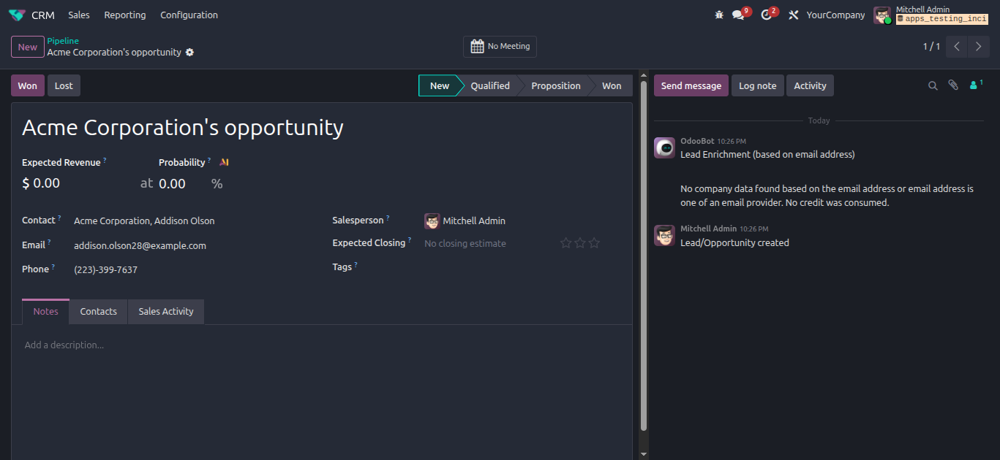
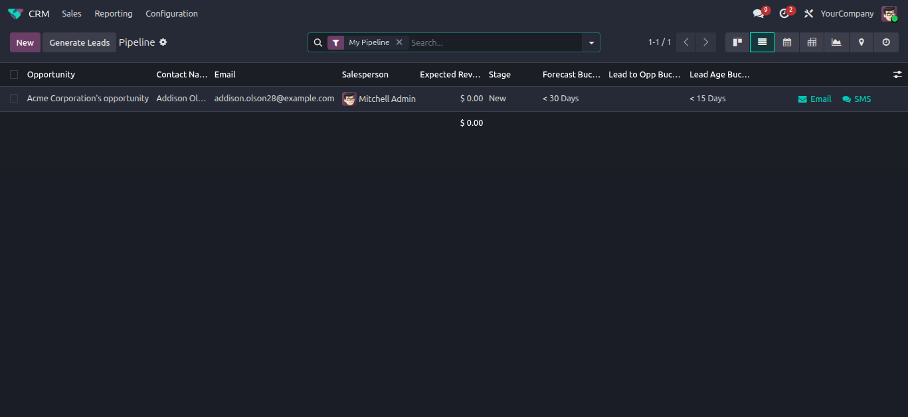
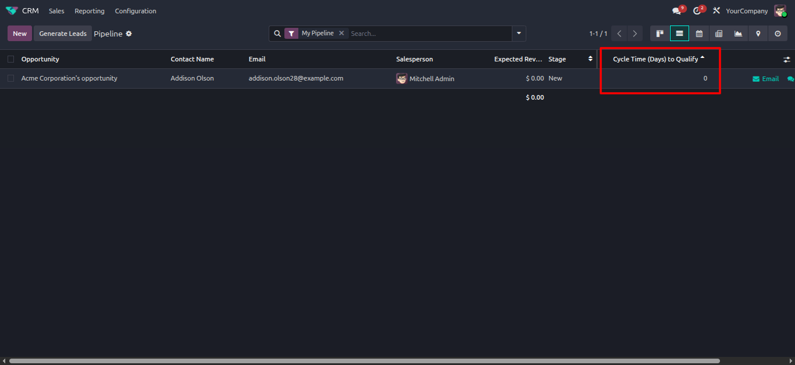
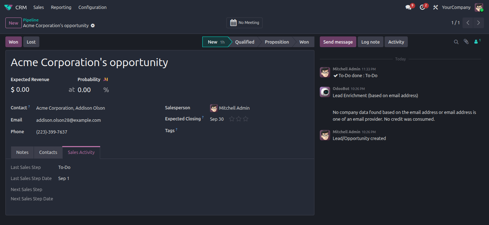
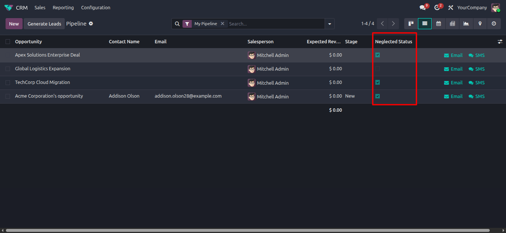
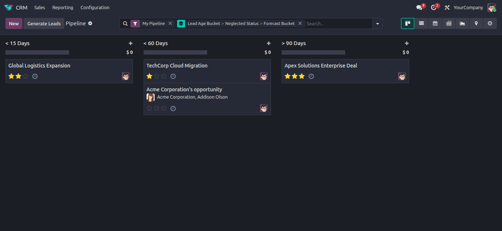

Incipient CRM Lead Analytics
Incipient Enterprise SuiteCRM Lead Analytics & Pipeline Cycle Tracker
Supercharge CRM pipeline intelligence with automated lead age bucketing, qualification cycle times, sales activity tracking, and automated neglected lead detection.
Need Setup Assistance?
Free pre-sales consultation and lifetime support for every installation.
Contact Technical SupportBuilt for Advanced Pipeline Intelligence
Automate lead age classification and prevent pipeline stagnation
Aging Buckets
Dynamic Time BucketsCategorizes leads into 15, 30, 60, and 90+ day buckets based on creation dates, conversion dates, and forecast closing targets.
Neglected Detection
Daily Cron AuditAutomated daily scheduled cron identifies neglected deals with no sales activity or overdue next steps for 10+ days.
Cycle Time Engine
Lead-to-Opp MetricsComputes exact qualification cycle time in days between lead creation date and conversion date (`cycle_time_to_qualify`).
The Business Transformation
How CRM Lead Analytics eliminates sales pipeline bottlenecks
Pipeline Stagnation
- ✕ High-value leads sit unattended in pipeline stages without automated neglected alerts.
- ✕ No visibility into lead age distribution or qualification cycle times.
- ✕ Sales Managers lack automated activity tracking for last completed and next planned sales steps.
Automated Pipeline Intelligence
- ✓ Automated daily cron jobs update lead age buckets and flag neglected opportunities.
- ✓ Instant tracking of last completed activity date and next planned activity deadline.
- ✓ Precise qualification cycle time metrics for executive forecasting and pipeline analysis.
Comprehensive Feature Suite
12 Core capabilities engineered for CRM pipeline analytics
Dynamic Lead Age Bucketing
Categorizes leads into <15, <30, <60, <90, and >90 day buckets based on creation dates.
Forecast Closing Time Buckets
Calculates expected closing timeframe buckets using expected closing date and creation date.
Qualification Cycle Time
Computes exact days required to convert a lead into a qualified opportunity (`cycle_time_to_qualify`).
Neglected Lead Status Flag
Automated boolean flag highlighting deals inactive for 10+ days without sales step updates.
Last Sales Step & Date
Tracks the name and completion timestamp of the last logged activity message (`last_sales_step`).
Next Planned Sales Step
Automatically retrieves the next scheduled activity type and deadline date (`next_sales_step`).
Lead-to-Opp Time Buckets
Categorizes conversion duration into 15, 30, 60, and 90+ day performance tiers.
Expected Closing Date Rule
ORM constraint prevents setting expected closing date prior to lead creation date.
Automated Cron Scheduler
Runs daily automated background crons (`ir.cron`) to update lead buckets and neglected statuses.
Search & Group-By Views
Integrates custom search filters for neglected leads, age buckets, and sales steps into CRM Kanban/List views.
Multi-Company CRM Ready
Operates seamlessly across multi-company sales teams and pipeline channels.
Odoo 19.0 Certified
Fully compatible with Odoo 19.0 Community Edition, Enterprise Edition, and Odoo.sh deployments.
Complete Operational Workflow & Use Cases
End-to-end visual breakdown of Lead Bucketing, Qualification Metrics & Neglected Lead Tracking
Lead Generation & Automated Timestamp Logging
When a new lead is created in Odoo CRM, the module captures creation timestamp (`create_date`) as baseline.
The system initializes tracking parameters for lead age, expected closing dates, and activity logs.

Dynamic Lead Age & Forecast Bucketing
The background cron computes total lead age and classifies deals into `< 15`, `< 30`, `< 60`, `< 90`, or `> 90 Days` buckets.
Forecast closing timeframe buckets are updated automatically to provide clear pipeline maturity metrics.

Qualification Cycle Time Calculation
When a lead is converted into an Opportunity, the module computes exact duration in days (`cycle_time_to_qualify`).
Sales Managers can evaluate lead qualification velocity across different sales channels and representatives.

Last & Next Sales Activity Step Tracking
The CRM form displays `Last Sales Step` (most recent completed activity) and `Next Sales Step` (planned deadline).
Provides sales reps and team leads with immediate visibility into current deal progression status.

Automated Neglected Lead Status Detection
The daily scheduled cron (`_cron_update_neglected_status`) checks for deals inactive for 10+ days.
If no recent activity or future scheduled step exists, `Neglected Status` is set to `True` for manager intervention.

CRM Pipeline Reporting & Group-By Filters
Filter pipeline views by Neglected Status, Lead Age Buckets, or Forecast Closing Buckets.
Enables sales leaders to reassign stagnant deals, optimize sales follow-ups, and accelerate pipeline velocity.

Frequently Asked Questions
Click any question below to expand or collapse details
Custom Development
Request custom CRM analytics dashboards or KPI metrics.
support@incipientcorp.com